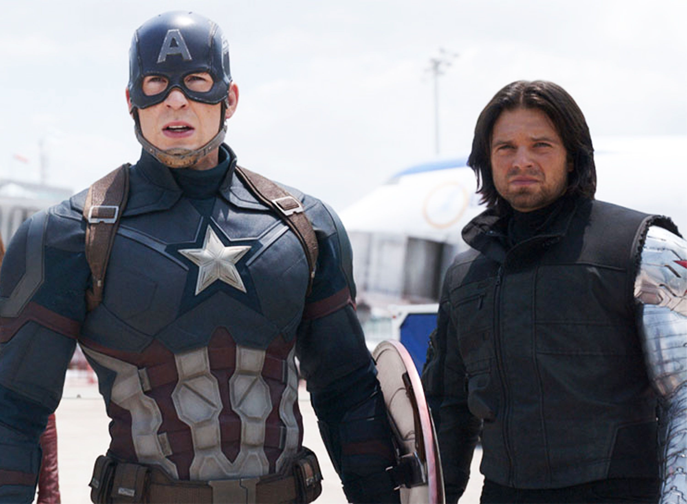

Steve Rogers America’s World War II Super-Soldier.
The First Avenger, his speed and stamina increased by the Super-Soldier serum, Captain America is usually the first leading the way into battle, with few able to keep up with him. His famous Captain America suit and helmet have been updated more than once since the 1940s, and offers him some protection against the elements and enemies alike. His longest companion...

is James Buchanan “Bucky” Barnes, who Rogers met in his Hell’s Kitchen neighborhood in New York and formed a close friendship with. Despite Barnes’ enlistment in the Army and Rogers’ career as Captain America during the war, the two found each other and united to form a solid battlefront against the Axis. Steve Rogers and Natasha Romanoff have formed a friendship, something the infamous Black Widow does not offer lightly. Captain America has also formed a bond with Sam Wilson, known as the Falcon, who has shown intense loyalty to Rogers. His relationship with Iron Man Tony Stark remains a difficult one to categorize, given the rift the two have had. Leading a new lineup of the Avengers, Captain America continued his work to fight criminals around the globe.